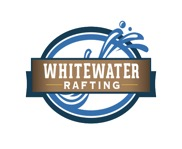

Our Rivers
Experience the Flow

Main Salmon River
Known as the "River of No Return," this stretch offers world-class rapids and beautiful white sand beaches for camping.
Middle Fork
The Middle Fork of the Salmon River is the premier alpine rafting trip in the lower 48 states, featuring steep drops and hot springs.